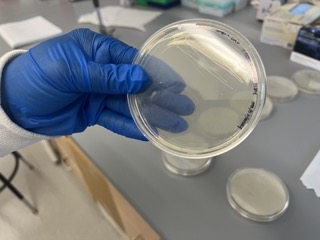

The Arhar Lab studies molecular chaperone proteins in bacteria. These
proteins are important for bacterial survival, but they also can enable the
evolution of antibiotic resistance. We study molecular chaperones to learn
how they work and uncover strategies to mitigate antibiotic resistance.
Our work focuses on:
Using techniques in protein biochemistry to better understand the
mechanisms of molecular chaperones in bacteria
Using genetic tools to identify which chaperones bacteria rely on to
survive in the face of antibiotics or other stressors